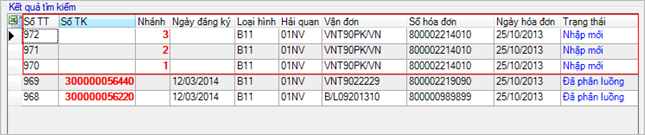
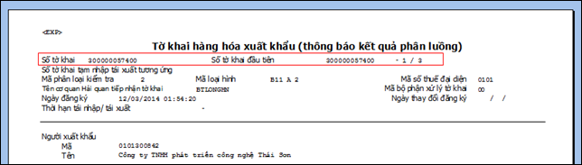
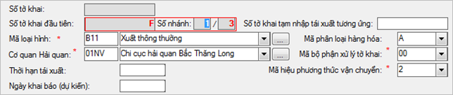
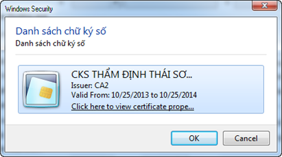
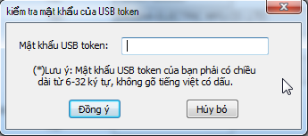
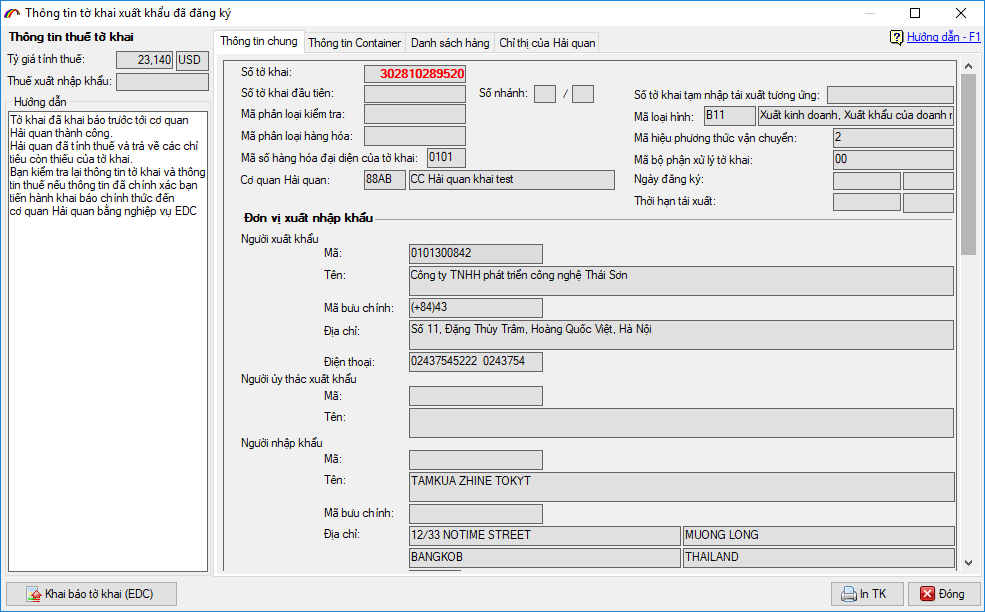
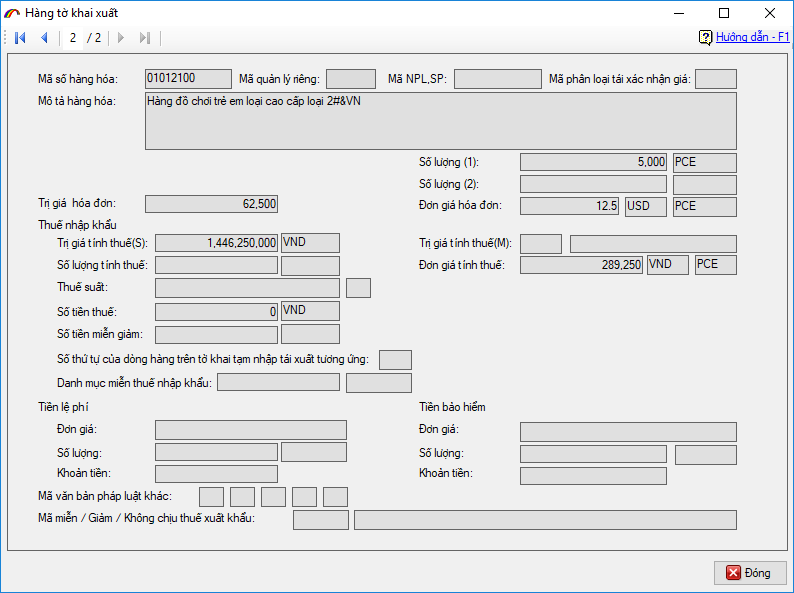
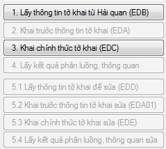
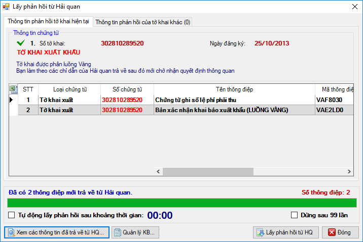
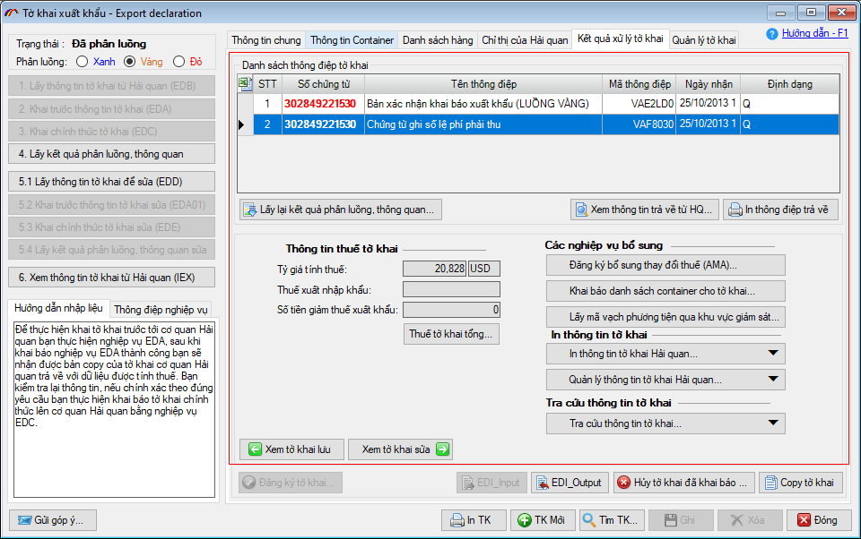

Sau khi đã nhập xong thông tin cho tờ khai, bạn ghi lại và chọn mã nghiệp vụ "2. Khai trước thông tin tờ khai (EDA)" để gửi thông tin.
Trong trường hợp tờ khai của bạn có số dòng hàng lớn hơn 50 chương trình sẽ hiện ra thông báo xác nhận tách tờ khai tự động , ví dụ danh sách hàng bạn nhập vào là 120 dòng hàng:

Bạn nhấn chọn "Yes" để chương trình tách tờ khai thành các tờ khai nhánh cho đúng chuẩn của VNACCS (một tờ khai chỉ được tối đa 50 dòng hàng, trường hợp nhiều hơn 50 dòng hàng thì tách thành nhiều tờ khai nhánh khác nhau), khi tách thành công thành bao nhiêu nhánh chương trình sẽ thông báo như sau:

Khi đó bạn vào menu "Tờ khai hải quan" chọn "Danh sách tờ khai nhập khẩu" các tờ khai nhánh có liên quan sẽ được thể hiện như sau:

Các tờ khai nhánh này có mối liên hệ với nhau qua số tờ khai đầu tiên, số thứ tự nhánh và các thông tin chung của tờ khai như là số vận đơn, số hóa đơn, các thông tin này giúp người khai hải quan và Cơ quan hải quan xác định được các nhánh khác nhau này là thuộc cùng một lô hàng.
Việc thông quan hàng hóa của các tờ khai nhánh này hoàn toàn độc lập về Luồng tờ khai, số tiền thuế, vì vậy khi tiến hành In tờ khai để lấy hàng, người khai phải in và đóng dấu tất cả các tờ khai nhánh khác nhau này, trên bản in sẽ thể hiện số tờ khai nhánh, số tờ khai đầu tiên số thứ nhánh và tổng số nhánh của lô hàng đang tiến hành thông quan.

Người khai tiến hành khai lần lượt các tờ khai với chú ý phải khai tờ khai có nhánh đầu tiên trước(số nhánh là 1).

Người khai tiến hành khai lần lượt các tờ khai nhánh với lưu ý khai tờ khai có nhánh đầu tiên trước (tờ khai có nhánh là 1).
Chương trình sẽ yêu cầu bạn xác nhận chữ ký số khi khai báo, bạn chọn chữ ký số từ danh sách:

Và nhập vào mã PIN của Chữ ký số:

Thành công hệ thống sẽ trả về số tờ khai và bản copy tờ khai bao gồm các thông tin về thuế được hệ thống tự động tính, các thông tin còn thuế khác như "Tên, địa chỉ doanh nghiệp khai báo".
Màn hình bản copy trả về bao gồm các thông tin đã khai báo của tờ khai, phần tổng hợp tính thuế trả về thể hiện ngay góc trái màn hình:

Các thông tin chi tiết về dòng hàng do hệ thống trả về ở mục "Danh sách hàng" bạn click đúp chuột hoặc nhấn F4 để xem chi tiết.

Sau khi kiểm tra các thông tin trả về, người khai có 2 phương án lựa chọn tiếp theo:
Thứ nhất: nếu các thông tin do hệ thống trả về doanh nghiệp thấy có thiếu sót cần bổ sung sửa đổi thì sử dụng mã nghiệp vụ EDB để gọi lại thông tin khai báo của tờ khai và sửa đổi sau đó tiếp EDA lại đến khi thông tin đã chính xác.
Thứ hai: nếu các thông tin do hệ thống trả về đã chính xác, doanh nghiệp chọn mã nghiệp vụ "3.Khai chính thức tờ khai EDC" để đăng ký chính thức tờ khai này với cơ quan hải quan, khi thành công tờ khai này sẽ được đưa vào thực hiện các thủ tục thông quan hàng hóa.

Khai báo chứng từ đính kèm
Theo quy định tại Thông tư 39 (điểm a khoản 7 Điều 1 TT39), chỉ cho phép xác nhận hàng qua khu vực giám sát khi tờ khai có chứng từ điện tử khai lên hệ thống Hải quan (áp dụng với tờ khai nhập và tờ khai xuất khẩu).
Do đó, kể từ sau thời điểm thực hiện nghiệp vụ EDA doanh nghiệp có thể thực hiện khai bổ sung chứng từ điện tử đính kèm cho tờ khai bằng cách vào tab "Quản lý tờ khai" chọn vào mục chứng từ cần bổ sung (Vận đơn, hóa đơn…) hoặc chọn "Chứng từ khác" để bổ sung nhiều loại chứng từ cùng một lần, chi tiết doanh nghiệp có thể tham khảo hướng dẫn khai báo chứng từ đính kèm điện tử đầy đủ tại đây.
Bước 3: Đăng ký chính thức tờ khai với cơ quan Hải quan (EDC)
Sau khi đăng ký thành công bản khai trước thông tin tờ khai và kiểm tra đúng thông tin hệ thống trả về, người khai tiến hành đăng ký chính thức tờ khai với cơ quan Hải quan, chọn mã nghiệp vụ "3. Khai chính thức tờ khai (EDC)"

Khai báo thành công tờ khai này sẽ được đưa vào tiến hành các thủ tục thông quan hàng hóa.
Doanh nghiệp tiếp tục nhấn vào "4. Lấy kết quả phân luồng, thông quan" chức năng này sử dụng để nhận được các kết quả phần luồng, lệ phí hải quan, thông báo tiền thuế và chấp nhận thông quan của tờ khai do hệ thống VNACCS trả về.

Đối với tờ khai là luồng Xanh: Trường hợp tờ khai được phân luồng 1 (xanh), Hệ thống tự động kiểm tra việc hoàn thành nghĩa vụ về thuế và quyết định thông quan, Công chức giám sát thuộc Chi cục Hải quan nơi đăng ký tờ khai hoặc Chi cục Hải quan nơi hàng hóa vận chuyển đi (trong trường hợp khai vận chuyển kết hợp)thực hiện việc in, đóng dấu xác nhận, ký, đóng dấu công chức vào góc trên cùng bên phải của trang đầu tiên Tờ khai hàng hóa nhập khẩu (trừ thông tin chi tiết từng dòng hàng) đã được phê duyệt thông quan, giao cho người khai hải quan để làm tiếp các thủ tục (nếu có);
Đối với tờ khai là luồng Vàng: Trường hợp tờ khai được phân luồng 2 (vàng), người khai xuất trình, nộp chứng từ giấy thuộc hồ sơ hải quan để kiểm tra, nếu kết quả kiểm tra phù hợp, công chức hải quan cập nhật kết quả kiểm tra vào Hệ thống. Hệ thống tự động kiểm tra việc hoàn thành nghĩa vụ về thuế và quyết định thông quan, Công chức được giao nhiệm vụ thuộc Chi cục Hải quan nơi đăng ký tờ khai thực hiện việc in, đóng dấu xác nhận, ký, đóng dấu công chức vào góc trên cùng bên phải của trang đầu tiên Tờ khai hàng hóa nhập khẩu (trừ thông tin chi tiết từng dòng hàng) đã được phê duyệt thông quan. giao cho người khai hải quan để làm tiếp các thủ tục (nếu có);
Đối với tờ khai là luồng Đỏ: Trường hợp tờ khai được phân luồng 3 (Đỏ), người khai xuất trình, nộp chứng từ giấy thuộc hồ sơ hải quan và hàng hóa để kiểm tra, nếu kết quả kiểm tra phù hợp, công chức hải quan cập nhật kết quả kiểm tra vào Hệ thống. Hệ thống tự động kiểm tra việc hoàn thành nghĩa vụ về thuế và quyết định thông quan, Công chức được giao nhiệm vụ thuộc Chi cục Hải quan nơi đăng ký tờ khai thực hiện việc in, đóng dấu xác nhận, ký, đóng dấu công chức vào góc trên cùng bên phải của trang đầu tiên Tờ khai hàng hóa nhập khẩu (trừ thông tin chi tiết từng dòng hàng) đã được phê duyệt thông quan. giao cho người khai hải quan để làm tiếp các thủ tục (nếu có);
Bước 4: In tờ khai và các chứng từ khác
Phần in này chỉ để doanh nghiệp tham khảo, các bản in chính thức sẽ do cán bộ Hải quan tiếp nhận tờ khai In, đóng dấu xác nhận, ký, đóng dấu công chức và giao cho người khai.
Sau khi nhận được các kết quả xác nhận tờ khai được chấp nhận thông quan, người khai có thể xem lại và in các bản in, các thông điệp này bằng cách vào tab "Kết quả xử lý tờ khai".
Nút "In TK" trên tờ khai sẽ in ra thông điệp mới nhất từ Hải quan trả về, trừ các thông điệp về phí và lệ phí, thông báo thuế.

Sau khi tờ khai đã được khai báo chính thức, nếu có sai sót cần sửa lại thì bạn tham khảo Hướng dẫn sửa tờ khai
Bản quyền © thuộc về Công ty TNHH Phát triển công nghệ Thái Sơn